调用栈,数据栈
数据栈数据结构
/// @brief 数据栈指针结构
typedef union StackValue {
TValue val;
struct {
TValuefields;
unsigned short delta;//相邻 tbc 变量在栈中的距离
} tbclist;//此堆栈中所有活动的将要关闭的变量的列表
} StackValue;
//栈指针
typedef StackValue *StkId;
struct lua_State {
...
StkId top; /* first free slot in the stack *///指向栈的顶部,压入数据,都通过移动栈顶指针来实现
StkId stack_last; /* end of stack (last element + 1) *///最后可用的位置数据栈 正常的栈操作在[stack, stack_last]之间
StkId stack; /* stack base *///栈的起始地址
StkId tbclist; /* list of to-be-closed variables *///记录着最后一个tbc节点,栈缩容时会判断节点是否在缩容空间内,如果在那么就根据这个节点调用缩容空间内所有tbc变量的 __close() 元方法
};
//数据栈大小
#define stacksize(th) cast_int((th)->stack_last - (th)->stack)
调用栈数据结构
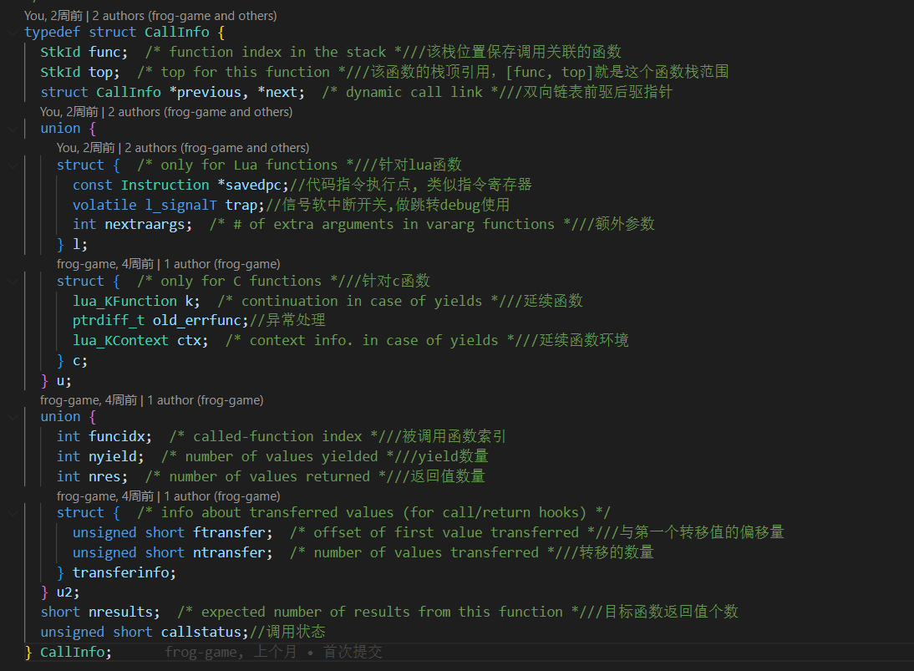
调用栈,数据栈初始化
这两个栈的初始化通过stack_init函数初始化
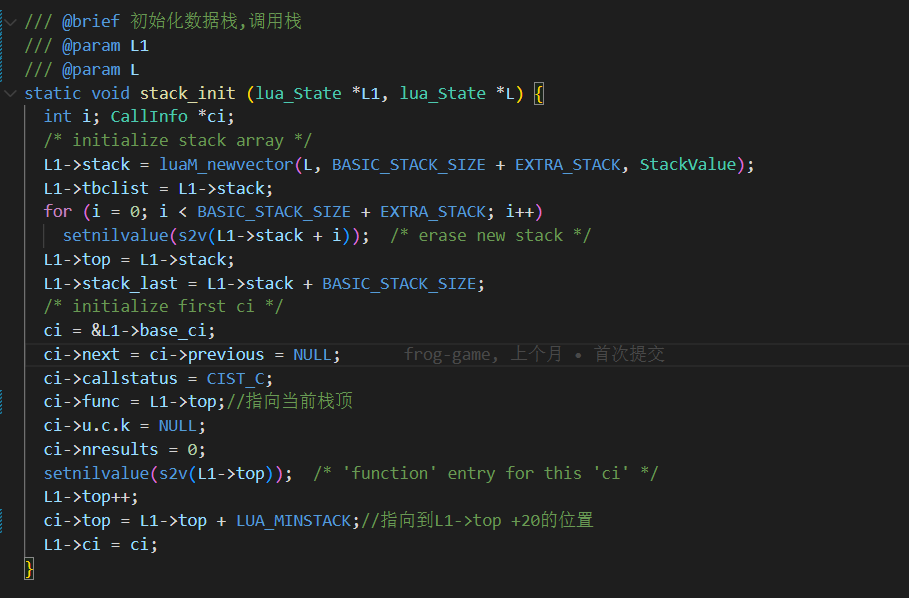
大概示意图如下
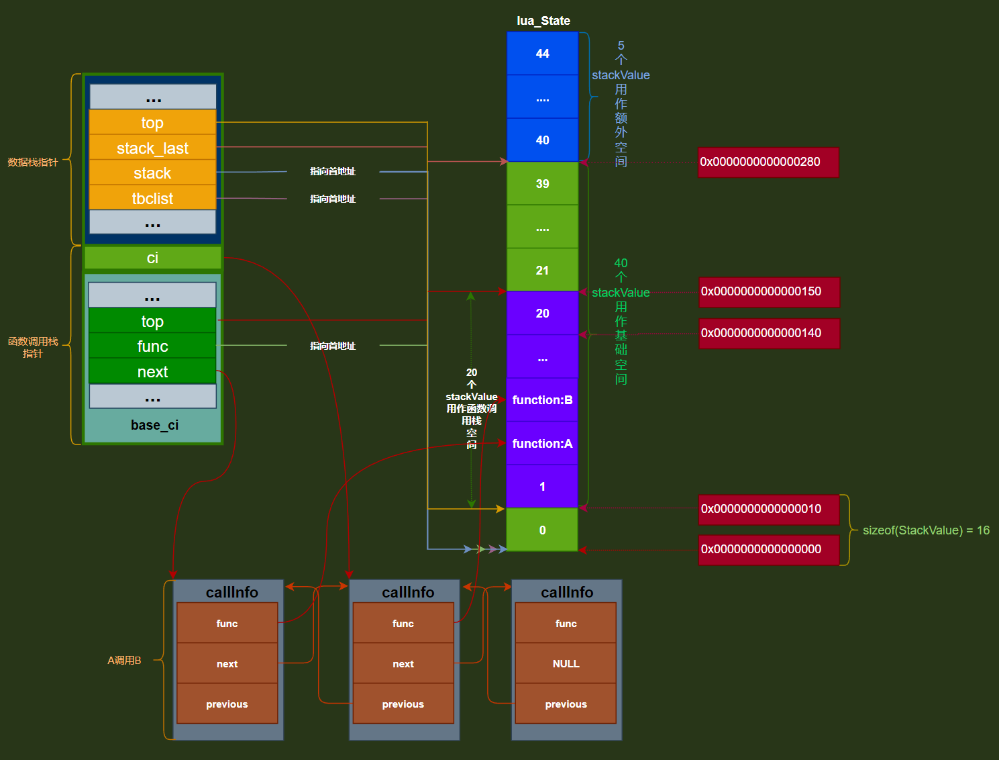
- 在
64位机器上,64位lua exe我们能得到sizeof(StackValue) =16 - 一开始线程创建一个大小为
BASIC_STACK_SIZE + EXTRA_STACK40个的StackValue的基础空间 - 数据栈
stack_last指针,指向stack + BASIC_STACK_SIZE的位置,也就是40号位置的起始地址 - 数据栈
stack指针,tbclist指针,都指向首地址,也就是0号位置的起始地址 - 数据栈
top指针指向函数调用栈func + 1的位置,也就是栈顶位置或者说他是下一个free位置也行,因为0号位置给了func,所以top指针需要指向下一个free位置,也就是1号位置的起始地址 - 函数调用栈
top指向函数调用栈的空间末尾,也就是20号位置的末尾,21号位置的起始地址 callInfo是当前函数A调用函数B的调用关系调用链,callInfo base_ci指向调用链的起始,也就是函数帧第一层callInfo ci指向当前执行的函数帧,这里图上只的是函数B
这里归纳总结起来有3个主要空间
-
[数据栈
stack指针,数据栈stack_last指针]表示数据栈空间 -
[函数调用栈
func指针,数据栈top指针]标识函数调用栈空间 -
TBC变量空间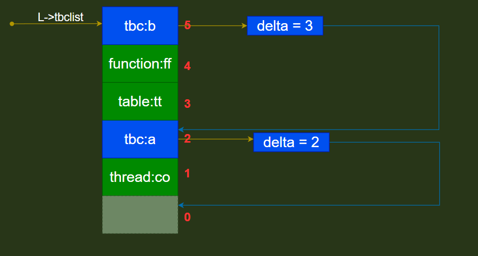
我们可以看到当
lua栈存了tbc变量的时候,他聪明的用了一个L->tbclist指针指向了最后一个tbc变量,然后每一个tbc的变量内部都有一个delta字段,来表示相邻的两个tbc变量差多少偏移量,从而让每个tbc变量都能够串连起来,这个思路lua table里面插入值的时候有hash冲突时候利用next字段的偏移量串连上冲突值一个思路
-
tbc变量的插入 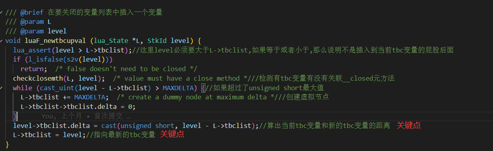从上面我们可以看出
- 插入一个新的
tbc变量的时候,只能插入到当前tbc变量的屁股后面, - 检测完这些以后,那么它就会检测一下你是不是关联了
__closed元方法 - 如果超过了
unsigend short最大值,那么就会创建虚拟节点 - 当前面都过就到了两个关键点,一个是算相邻两个
tbc的距离,一个是把tbclist指针指向最新的tbc变量位置
- 插入一个新的
-
tbc变量的删除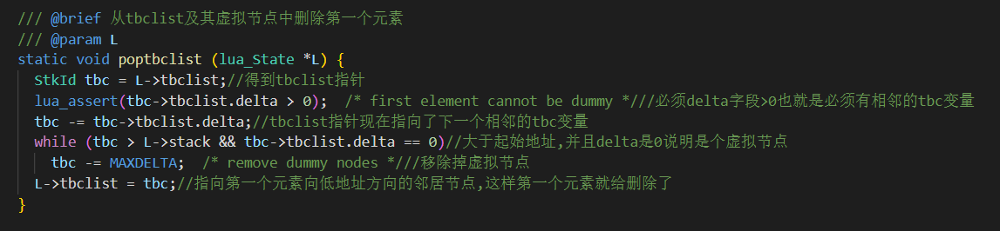
和下图类似
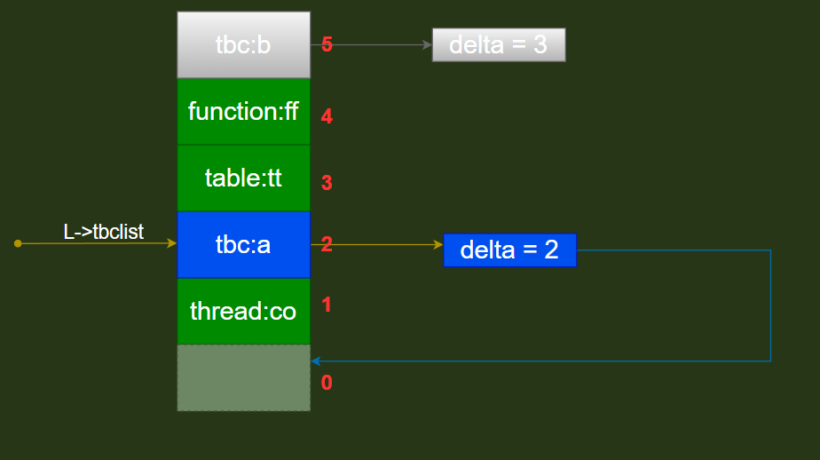
Lua调用C
C层注册过程,并提供Lua接口过程
//能够被Lua调用的C函数必须是这种规则 函数的返回值int值表示C函数返回值的个数
typedef int (*lua_CFunction)(lua_State *L)
可能有人会问,为啥一定要这种样子的函数指针呢,让我们追溯源码了解一下
我们以这个为例
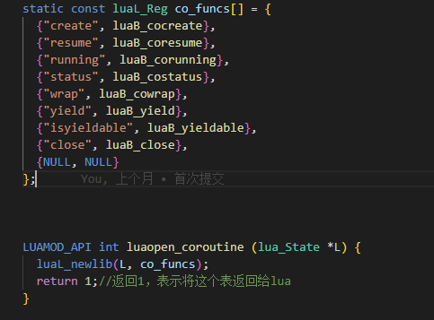
我们一步步分析
-
luaopen_coroutine这个函数有个前缀luaopen_这个是luaC库中开放函数的前缀,这样你就可以在lua文件中直接调用coroutine开头的函数了,比如上面的coroutine.createcoroutine.resume等等 -
注意这里能直接调用
luaopen_coroutine是因为这里已经注册到全局表了,而如果是自己自定义的那么就的通过require你的so文件,并从so文件中找到luaopen_开头的函数 -
接下来我们调用
luaL_newlib(L, co_funcs)函数,并传递了一个funcs数组,执行完这个以后我们就创建了一个全局的table表,用来存funcs数组里面一一对应的函数,比如lua中调用coroutine.create等价于就是调用C语言的luaB_cocreate函数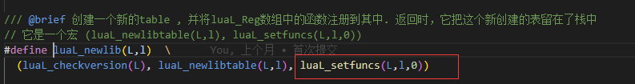
从上图中我们可以看到还调用了
luaL_setfuncs函数,这个是lua为啥能调用c代码的核心地方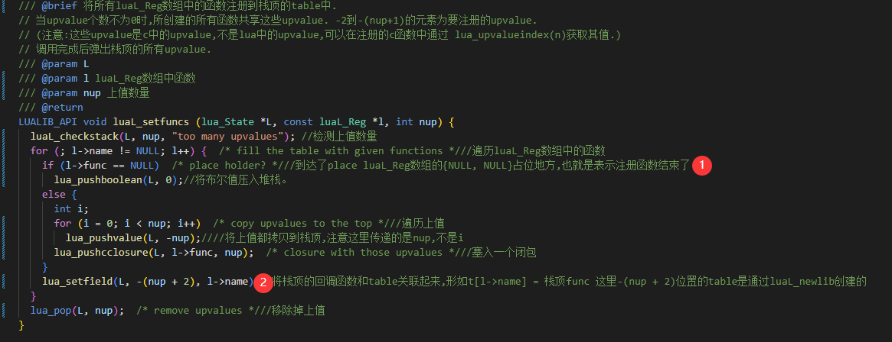
通过源码分析,我们可以看出这里其实就是把所有
luaL_Reg数组中的函数注册到通过luaL_newlib创建的table中图上
1号位置完美的解释了为什么funcs数组要以{NULL,NULL}结尾2号位置就是真正的把luaL_newlib创建的table和funcs数组一一关联起来,也就是形如t[l->name]=func形式通过这样的操作就能够实现lua中调用coroutine.create然后跑到c语言的luaB_cocreate函数继续执行下面的逻辑了回到一下这个问题
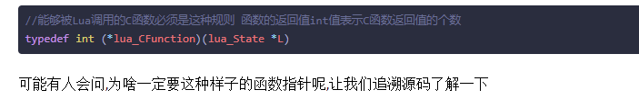
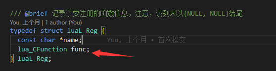
我们从这个箭头位置可以看到
luaL_Reg其实指向的就是那个func数组第二列的c函数位置,比如下面话红线的位置就是func指向的地方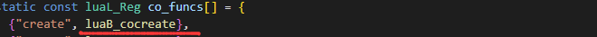
调用过程
首先我们以如下代码作为例子
//c层代码
#include <stdio.h>
extern "C" {
#include <lua.h>
#include <lualib.h>
#include <lauxlib.h>
}
int main(int ar)
{
lua_State* L = luaL_newstate();//创建主线程栈
luaL_openlibs(L);//打开常规的lua标准库
luaL_dofile(L, "helloworld.lua");//加载并运行指定的文件
return 0;
}
local ff = function(a, b)
local c = a +b
print("start yield")
local x,y, z= coroutine.yield(c)
print("restart co", x,y,z)
return x + y + z + c
end
local co = coroutine.create(
ff
)
执行这段代码调用链如下
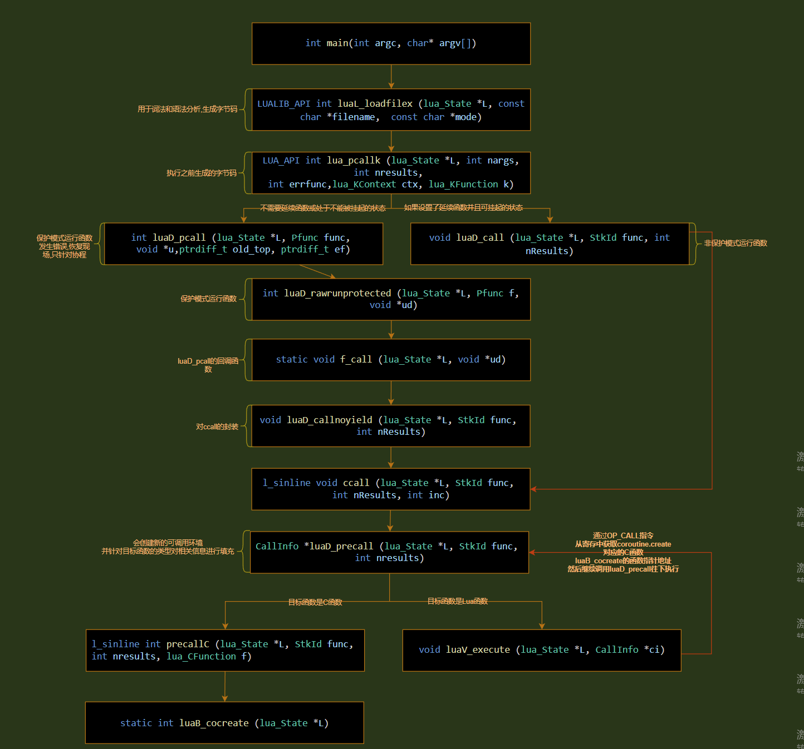
通过以上的调用链流程我们就完美的调用到了对应的C函数
更通俗的来讲就是如果想要Lua能调用C层那么我们就的在C层把对应的函数指针,注册到通过luaL_newlib函数new出来的table中,等待Lua通过luaL_dofile函数去加载lua文件并调用lua_pcallk去一步步找Lua函数对应的的C函数指针,从而达到Lua能调用C的要求
这里在重点说一下luaL_loadfilex里面加载Lua文件的过程,当知道了这块过程以后,能初步的知道Lua解析文件后生成指令的大概过程,得到了指令以后,Lua就可以通过luaV_execute去找目标C函数指针调用C函数了
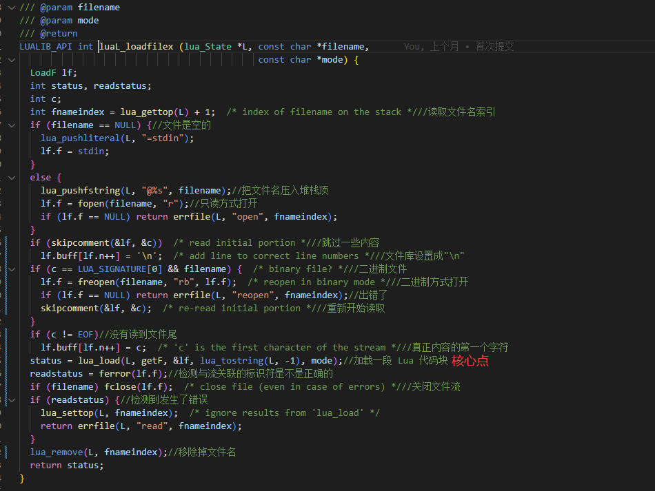
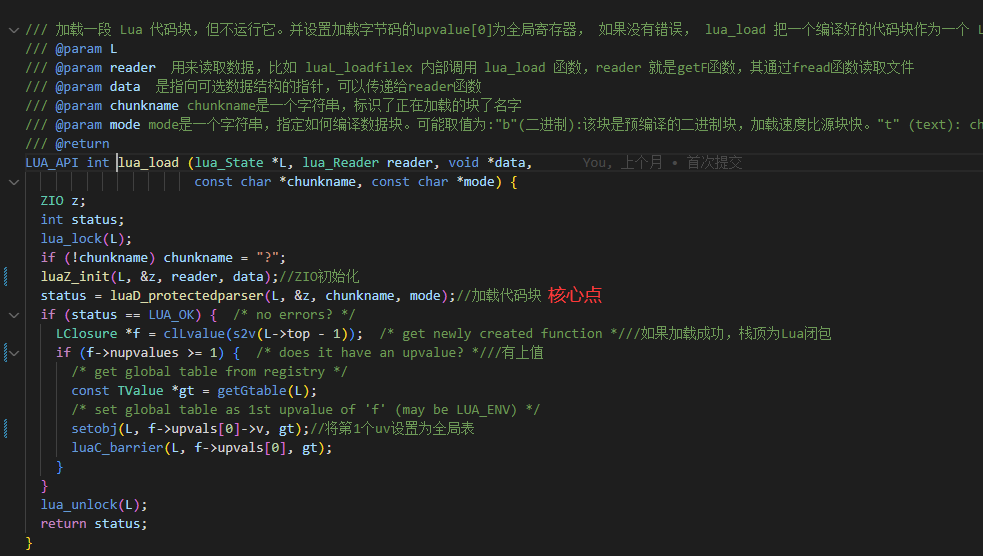
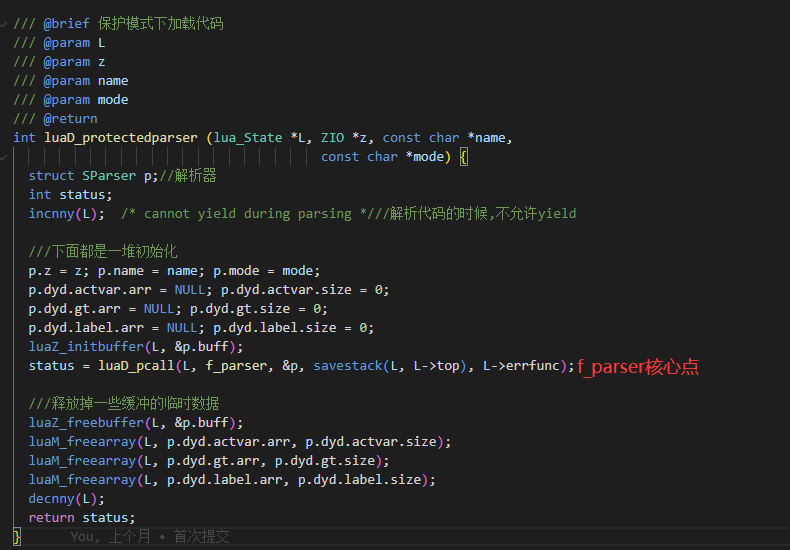
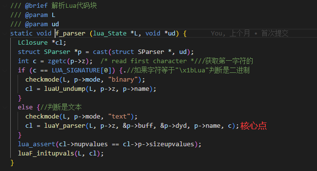
来到f_parser这个地方的时候,我们可以看到如果是二进制文件,那么就是直接执行luaU_undump,如果是文本,那么就直接执行luaY_parser,因为我们是文本lua文件,所以我们进入的是luaY_parser
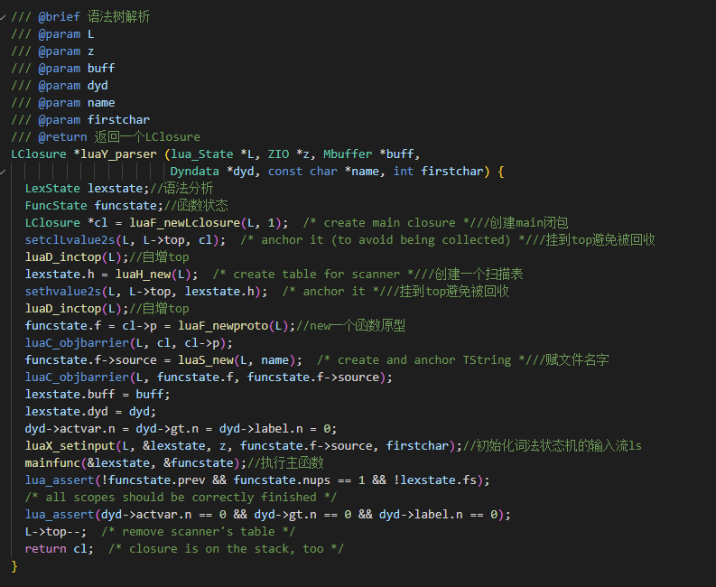
从上图中我们可以看到当进行语法分析的时候,会创建一个LexState结构用于存储语法分析结果,FuncState结果用于存储函数状态,并创建了一个函数原型, 函数原型里面会保存当前函数的形参,局部变量,上值,等等一些信息, 便于后面变成指令执行,最后返回了一个LClosure结构出去
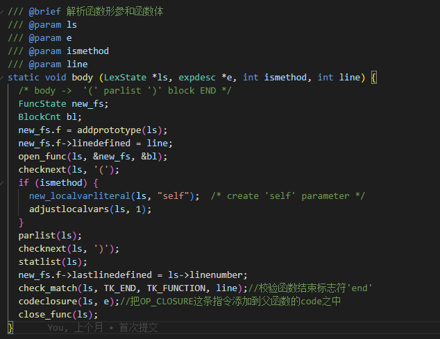
接下来就会在执行body函数的时候把形参和OP_CLOSURE 等等相关指令创建出来,这样就便于后面luaV_execute函数去执行相关的指令了,从而在执行lua函数的时候通过找到对应的C函数指针而往下执行
简介流程
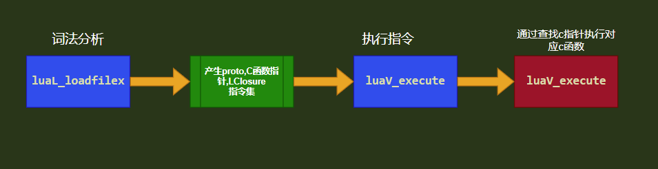
C调用Lua
extern "C" {
#include <lua.h>
#include <lualib.h>
#include <lauxlib.h>
}
lua_State* L;
int
luaadd(int x, int y)
{
int sum;
/*函数名*/
lua_getglobal(L, "add");
/*参数入栈*/
lua_pushnumber(L, x);
/*参数入栈*/
lua_pushnumber(L, y);
/*开始调用函数，有2个参数，1个返回值*/
lua_call(L, 2, 1);
/*取出返回值*/
sum = (int)lua_tonumber(L, -1);
/*清除返回值的栈*/
lua_pop(L, 1);
return sum;
}
int
main(int argc, char* argv[])
{
int sum;
L = luaL_newstate(); /* 创建lua状态机 */
luaL_openlibs(L); /* 打开Lua状态机中所有Lua标准库 */
/*加载lua脚本*/
luaL_dofile(L, "helloworld.lua");
/*调用C函数，这个里面会调用lua函数*/
sum = luaadd(99, 10);
printf("The sum is %d \n", sum);
/*清除Lua*/
lua_close(L);
return 0;
}
function add(x,y)
return x + y
end
执行luaL_dofile(L, “helloworld.lua”)
效果会如下面流程图的一样
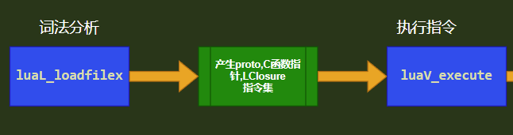
把相应的指令,proto,局部变量,全局变量,上值等等其他都创建好,等待C语言的调用
接下来我们一步步往下走
执行sum = luaadd(99, 10);
执行lua_getglobal(L, “add”);
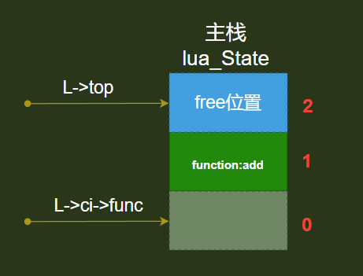
执行 lua_pushnumber(L, x);lua_pushnumber(L, y);
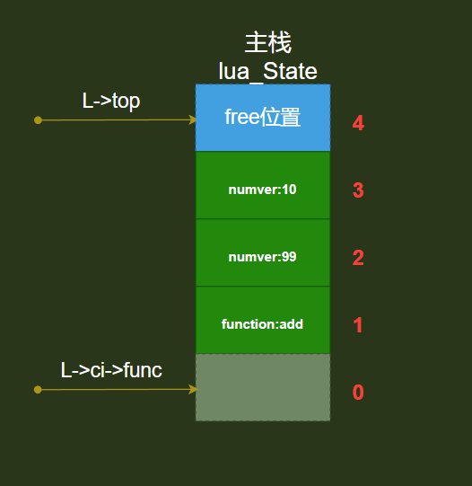
执行 lua_call(L, 2, 1);
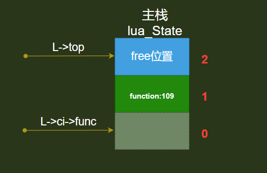
执行 sum = (int)lua_tonumber(L, -1);
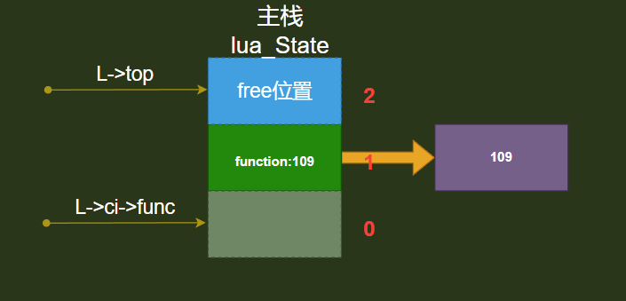
执行 lua_pop(L, 1);
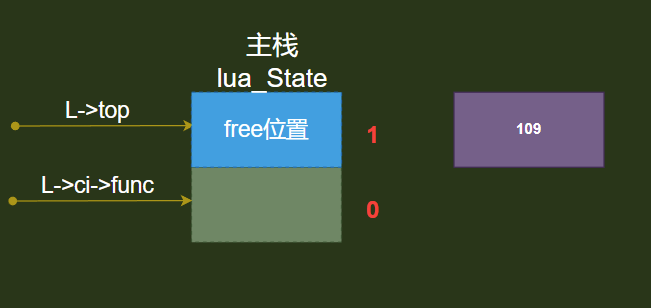
这样就实现了C调用Lua的过程
总结
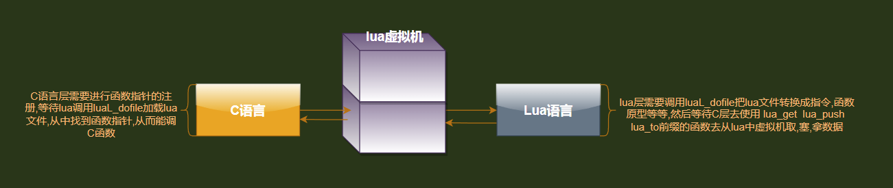
从中可以看出不管是Lua调用C还是C调用Lua都离不开lua文件中需要去luaL_dofile解析Lua文件,生成相关的指令,函数原型,等等
但是Lua调用C的时候还必须把luaL_Reg数组中的函数注册到lua虚拟机中,这样才能实现Lua调用C
也有人说loadstring也能实现次功能,但是看完源码以后其实他类似于luaL_dofile的加载,没太大区别,只是一个是执行字符串块,一个是执行lua文件
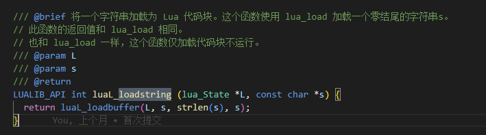
更详细的注释请去我的GitHub地址
以下是我几乎每行都加了注释的GitHub地址
-
ldo.c注释地址 -
lparser.c注释地址